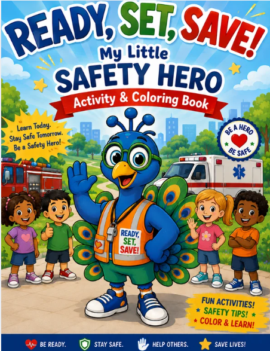

Our programs help individuals and families prepare for emergencies, build safety skills, and stay connected—because stronger communities start with being prepared.
☑ Be Informed
☑ Make a Plan
☑ Keep Important Info Handy
☑ Build Your Support Network
☑ Be Ready Together
Prepared People.Each program is designed to be useful, respectful, and flexible — meeting people where they are.
Emergency ID cards, caregiver forms, current-photo templates, communication details, and family planning tools.
Learn More →A developing secure profile concept designed to connect QR and NFC products with essential emergency information.
Learn More →Approachable CPR, emergency response, and safety learning for children, families, caregivers, and community groups.
Learn More →
Planning support for homes, schools, transportation, public places, and community events.
Learn More →Education that supports calm, informed, and person-centered interactions during emergencies.
Learn More →Awareness resources, family communication tools, safety education, and community resource tables.
Learn More →Partner, volunteer, or donate to help bring our programs to more families, schools, and communities across the Greater St. Louis region.